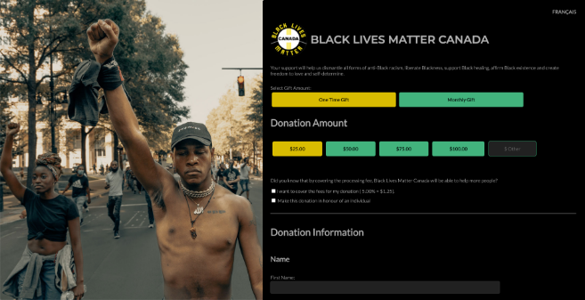
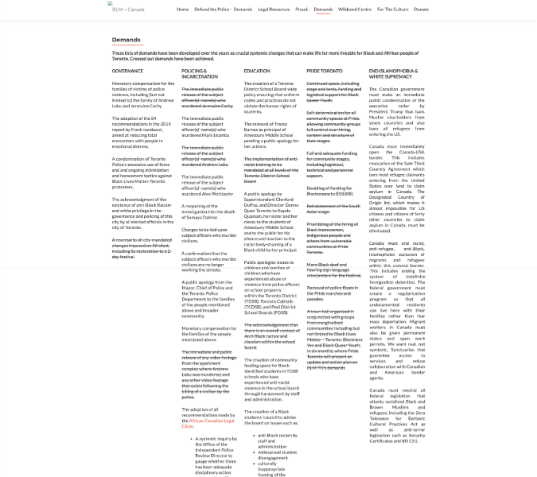
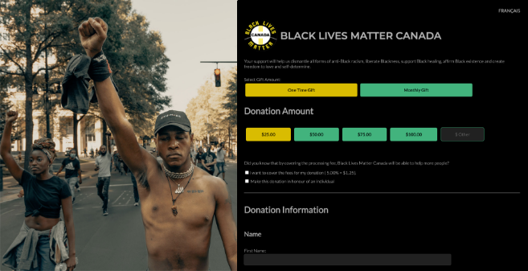
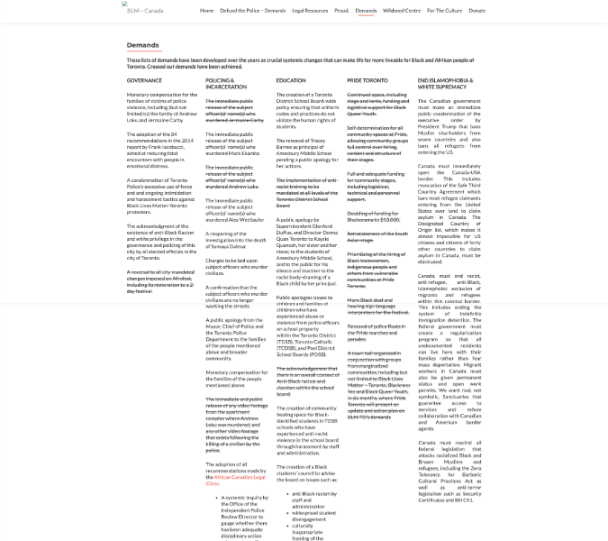

Usability Testing
I recruited 4 people to test the prototype. The participants were aged between 20 - 35 years, who have donated to a non-profit.
The objective of the test was:
- How easily users are able to donate $25
- How easily users are able to find information related to “carding”
- How does the overall experience feel like
- What improvements need to be made
Test Results
Test Completion Rate: 100%
Error-free rate: 83%
- 4 out of 4 participants were able to donate with ease
- 3out of 4 participants were able to find information related to “carding”
- 4 out of 4 participants felt the experience was smooth and easy
Final UI Screens
While continuing to keep the user’s needs and pain points in mind and the feedback provided from the usability test, I designed a high-fidelity wireframe. The design is met with impactful hero images and heavy fonts as the website needed to not only create an impact for visitors, but remain true to the personality and brand of Black Lives Matter.
Homepage
As most users does a quick research about a non-profit organization, the homepage was designed to have all relevant information available. Users are able to donate without exiting the homepage by selecting the “Donate” button available on the hero image.
Scroll image to the right to view full homepage.
About Us Page
This page is used to further describe what BLM-Canada is about, their association with the BLM international organization. Creating a consistent design throughout the website was critical as familiarity builds trust with visitors.
Demands Page
The demands page starts off with an impactful hero image and message, "It’s time for a change”. BLM’s current focus is to change the police system. However, the phrase “Defund the Police”, comes with a negative connotation to some. Therefore, as visitors scroll, they’ll be met with a clearer understanding of what “Defund the Police” means (to invest in alternative approaches to creating spaces and security for all).
Donate Page
The donation page was designed to resemble the homepage. It was kept very simple with an impactful hero image. As visitors scroll down, they’ll be met with a small section that offers other methods of supporting the movement.
Conclusion
From the research, I realized that it was important for people to have full transparency with the allocation of their donations. Unfortunately, I were unable to find statistics or data relating to BLM-Canada online. To further develop this project, it’s critical to know where the money is being allocated for transparency to donors in order to achieve success.
After many attempts, I was unable to contact the stakeholders of BLM-Canada. This would have been extremely helpful in developing our case study with full facts. Hopefully in the future, I can establish a contact with them in order to further develop this project. I would love to send them the redesign and show them the research that was conducted on their behalf.


 


